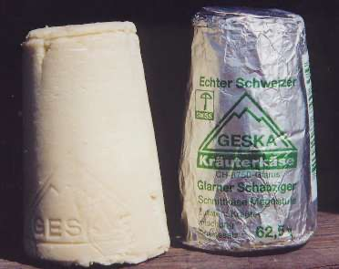
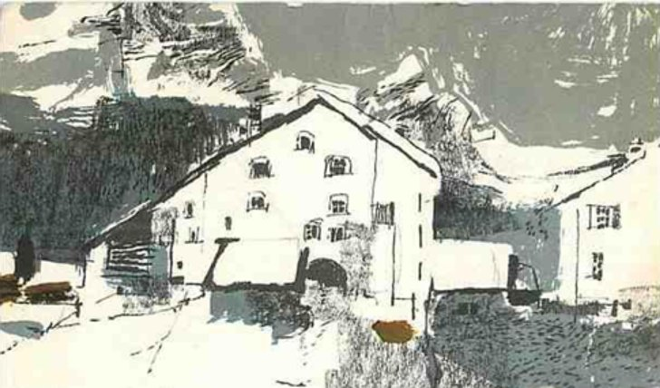
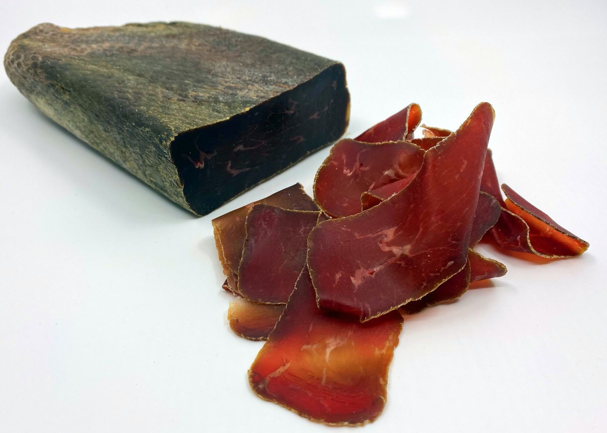

This blog is dedicated to life in the alpine reaches of Europe through
the eyes of tourists who visited the region in the Victorian era... with some
modern ideas.
Do you know, my readers, what an alp is? Perhaps the question seems trivial to
you, and you feel inclined to reply indignantly, "Of course!" Well, perhaps you
are right; but still I am going to describe an alp, for it is also very possible
that you are wrong. As to what an alp is not, I will begin by stating most
emphatically that it is not a mountain, that it is not snow-covered in summer,
and that it has nothing whatever to do with those incidents of nature spoken of
in guide-books as "the Alps." An alp is written with a small a- this is one
distinction. It is a pasture tenanted in summer by cows, goats, and huge black
pigs, and young men and maidens to look after the same, consequently it is not
snow-covered except in winter, and as it supplies the animals with beautiful and
nourishing grass, it presents a very different aspect to the rocky and ice-clad
sides of the Alps (with a large A).
During the long winter months, the cows, which are of such value to the Swiss,
are kept in hot, often stuffy, stables in the villages, and only taken out every
day for water. It is a familiar sight to winter visitors in the Alps to meet these
animals in the village street, plunging and galloping about in the enjoyment of a
few breaths of fresh air on their way to drink at one of the many troughs with
which even the smallest of Alpine hamlets is so liberally supplied.
Heading to the alp
Towards the beginning of May, the cows are taken from their stables and driven to
the lower alps. These alps constitute a great source of wealth to the country.
Many owners of large herds of cattle have as many as three, situated at different
altitudes on the mountain-side. It is to the lowest that the cows first go, and
by the time its rich pasturage has been fully enjoyed and considerably diminished,
the snow will have melted from the slopes above, and thither the herd pursues
its way. By the middle of June, or later, the highest alp is gained, and there the
animals remain till the early autumn approaches. Then they descend, halting for a
month or so at the intermediate stattions, till the end of October sees them once
more established in the valley for the winter.
Who was Mrs. Main? Elizabeth Hawkins-Whitshed (1860-1934) was born in Ireland
and was a mountaineering pioneer at a time when it was unheard of for women to
climb mountains. She was married three times (her second husband was John F. Main)
and was known after her third marriage as Mrs Aubrey Le Blond. In the age of 21
she moved to Switzerland, and during that summer scaled Mont Blanc twice. She
was an avid writer, and photographer, publishing her first book The High Alps
in Winter in 1883. Find more about
Lady Legends of the Alps.
the Alps relates to the whole, snow-capped European mountain range (Alp
is related to the Latin alus, meaning white) that stretches from Austria
and Slovenia in the east through Italy, Switzerland, Lichtenstein, Germany and
France in the west.
On cheese making
From "The Alpine Regions of Switzerland and the
Neighbouring Countries", by T.G.Bonney in 1868.
Cheese is always made twice a day. The milk is warmed in the great caldron before
the rennet is put in, and then stirred for half-an-hour. The curds, after draining
a little, are at once put under the press. The cheeses are turned daily, and salt
is said to be rubbed into them with a stiff brush. There are generally three
qualities, the rich (gras), the demi-gras, and the maigre.
The first is made of new
milk, or new milk with cream added; the second of equal parts of new and skim milk;
and the third with skim milk alone. When the curds have been removed (which is done
by the hands or by a strainer) some more rennet is added to the whey, and from the
curds thus obtained a kind of cheese is made, called serret, or sérac,
which in taste resembles the poorest English cream-cheeses. This forms one of the
herdsmen's perquisites; it is sometimes eaten fresh, sometimes salted for keeping;
the latter being to my taste the more palatable. The milk, when first cracked, is
called niedl, brousse or fleurette, and is a noted
mountain luxury. It is well however not to yield too freely to its seductions,
as it is apt to cause remorse on the morrow.
The most celebrated cheeses are the Gruyère, made in Canton Fribourg, and
the Schabzieger of Canton Glarus, which is coloured greenish-blue with melilote
flowers. There are also several other varieties of fame. I particularly remember one,
in taste rather resembling Stilton, which was served to us at Chateau Queyras, in
Dauphiné but the common cheese is poor, like an inferior Gruyère,
with a slightly sour taste.

Schabziger Cheese
Schabziger is a conical cheese with a greenish tint, and an intense flavour,
due to the addition of a pungent, clover-like herb named Trigonella Melilotus-
caerulea or blue fenugreek. It was first made in the monasteries of Glarus in
the 8th century. It is one of the earliest protected brands, in 1463. Schabziger
is best eaten with pasta, potatoes, or blended with soft butter to make a spread.
Eating bread in a mountain village
From "The Alpine Regions of Switzerland and the
Neighbouring Countries", written by T.G.Bonney in 1868 (pp.237-238).
It is a hard life in winter in a mountain village; every peasant, much as he may
love his home, will tell you that; 'Un mauvais pays, un pays des montagnes,'
is the common complaint uttered sadly and apologetically, yet with a touch of
affection in the tone, while your host places his scanty fare before you. And no
wonder that it is hard: wages are low; the simplest luxuries dear, or unattainable,
for they must be brought up miles of rough mule-paths. Rye opens tolerably well when
the summer is fine; wheat imperfectly; so the peasant's bread must be made of the
former. Baking too is a serious business; and fuel, likely enough, is too dear to
allow of the oven being often heated. Bread therefore is made only one or twice a
year, Toussaint being a favourite season. It is baked in large cakes,
half a yard or so in diameter, like gigantic buns, which are stored on shelves
in an airy loft in the same way as cheeses. They are a dark brown colour, and they
soon become dry, remaining perfectly sweet and wholesome for six or even twelve
months. In fact, I believe that the former period is generally the shortest for
which a batch is made; and I can see no reason why the bread should not remain
good for years. It is very hard, as formidable to weak teeth as sea-biscuit, and to
try to slice it with an ordinary knife is lost labour: a hatchet may be used with
advantage, but the correct instrument is a sort of cutter, which terminates in a
hook fitting into a ring on a piece of board, so as to give a leverage. An enterprising
member of the Alpine Club thus records his experience of one of these loaves.
Oyace yielded but one small rancid sausage, two bottles of wine, and a loaf of black
bread. The last may be excluded from the list. We tried to chop it with an ice axe,
and it hopped about the châlet like a marble; we boiled it for four long hours,
while we glared greedily at the pot, and at the end a quarter of an inch of the
outside was turned into gluey slime, and within it was as hard as ever. No
fragment of that loaf was ever mastered by guides or travellers.
(Alpine Journal, Vol.1, p.222)
Here is a good rendition of rye bread from the Swiss Valais, or
Walliser Roggenbrot.
From "A Walk in the Grisons", written by Foster Barham Zincke in 1875 (p.118).
The bread had been baked at Silva Plana in the Engadin, and was a month old. It was
the petrified fossil of bread. No traces of moisture remained in it, and it was as
hard to masticate as it had been to cut.
On alpine architecture
From "The Alpine Regions of Switzerland and the
Neighbouring Countries", by T.G.Bonney in 1868 (p.242).
Every district of course has its own peculiarities, but the domestic Alpine
architecture may be epitomized with tolerable correctness as follows: In the French
and Vaudois Alps, stone is used much more than wood, and the houses are mean and
unpicturesque. In the Pennine chain both are employed, but the latter rather for
small châlets, barns, and outbuildings. In the Oberland (using the term
in a wide sense) wood is the favourite building material, and nearly every cottage
is a study of quaint picturesqueness. In the Grisons and the adjoining Tyrol
the houses are usually large and plain, without beauty, but comfortable looking,
built of stone, plastered and white-washed; wood being chiefly used for internal
decorations. Further east, in the Tyrol, more use is made of the latter material,
the houses being often about half and half and in some of the larger villages
or towns, such as Sterzing on the Brenner Pass, the numerous quaint oriels and
bay-windows produce an excellent effect. Speaking genrally, the use of wood
denotes German, and that of stone Italian, influence in the population.

A house in the Swiss canton of Graubunden
The Edelweiss
From "The Edelweiss", by John R. Bolles in 1881 (p.116).
I was born in my little shroud,
All woolly, warm, and white,
I live in the mist and cloud,
I live for my own delight.
I see far beneath me crowd
The alpine roses red,
That make the valleys bright,
And the gentian blue, sun-fed.
I bloom for the eagle's eye,
I bloom for the daring hand,
I live but for God, and I die
Unto Him, and at His command.
Anon.
What did they eat in the Grisons valleys?
From "A Walk in the Grisons", written by Foster Barham Zincke in 1875 (p.118).
My successive inquires for mutton, beef, butter, eggs, fruit, cognac, extracted from him
only negative replies. What, then, did the good people of Schiersch live upon? He could let
me have cheese and dried beef. I had been expecting mutton côtelettes,
with a dessert of figs and peaches. In my disappointment I felt disposed to go on further.
I could hardly fare worse by doing so. But after I had entered the house I felt a
disinclination, by leaving it, to balk the expectations of the good people, and perhaps
my own too. And so I spent half and hour at the Lion. As to the dried beef, I had ceased to
think it actively bad. The wine was rather sour. Against the cheese nothing could be said.
If this is all that Schiersch can set upon its guests, what is the usual fare of the
Schierschers themselves? Few of us as we pass through a smiling Swiss valley think, or know,
how hard its inhabitants live. They, poor souls, or rather their hard-worked bodies, have
neither the dried beef, nor the half sour wine, nor yet such cheese as I had. Meagre cheese,
the curds that rise, on the second heating, after the first curd for the cheese has been
removed, black rye-bread, polenta, and potatoes constitute, with coffee for their chief
beverage, the normal fare of the inhabitants of most of these valleys. The greater part of
the butter, and of the fresh meat that they produce is sent off to places, where there are
hotels with many travellers to be provided for.

Dried beef from the Swiss canton of Grisons
Grisons is the largest Swiss canton, tucked away in the south-eastern part of
Switzerland. Grisons is the French (and English) name for the canton, in German it is
known as Graubünden (meaning "Gray Union"), in Italian Grigioni, and in Romansh,
Grischun. It is Switzerlands only trilingual canton (German, Italian, Romansh), and
the only one where Romansh (a descendant of Latin) has official status.
Schiersch is the Walser German word for the Grisons town of Schiers.
Meagre cheese and mummy beef
From "A Walk in the Grisons", written by Foster Barham Zincke in 1875 (p.46-47).
As to the meagre cheese, and dried beef, during the following three weeks,
as must be the case with every pedestrian through the byways of the Grisons, I
had many opportunities of weighing their merits and demerits, undisturbed by
any simultaneous consideration of comestibles. The meagre cheese is made of skimmed
milk in places where a market can be found for butter. Peist sells its butter at
Coire; and so the good people of the place, and their few visitors, have to
content themselves with cheese from which the butter has been extracted. It is
not positively bad; but this negation of badness is its only merit. The dried
beef if a production of the Grisons, for which they are indebted to their climate.
At the altitude of their valleys, the air is so dry that for nine months out of
twelve meat has no tendency to decomposition. Availing themselves of this
favourable condition they kill in the autumn the beef and pork they will require
in the ensuing year. It is slightly salted and hung up to dry. Nothing more is
done to it, except eating it. In three or four months time it is not only dried,
but also cooked, that is to say the air has given it all the cooking it will
ever receive. It has become as dry and hard as a board, and internally of the
colour of an old mahogany table. Externally there is nothing to suggest the idea
of meat; it is covered with cobwebs, dust and mould, and is undistinguishable
from fragments of the mummies of the sacred bulls taken from the catacombs
of the Serapeum at Memphis. When your host brings from his cellar the leg of the
mummy of a Grison cow, shrunk to the dimensions of the human limb, and tells you
that it is to be your dinner, you are disposed to advise him to take it to the
trustees of the British Museum. He is, however, about to prepare some for your
repast, and you watch the process with curiosity. It is a very simple one: the
material is curt across the grain with a very sharp knife in shavings no thicker
than writing-paper. Were it cut the length of the fibre it would be as
unmanageable in the mouth as a piece of whipcord, or a fiddle-string.